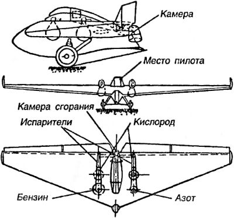
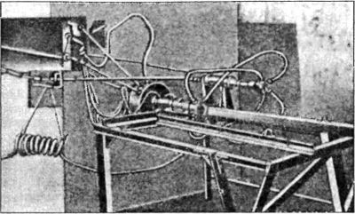

Ракетоплан «РП-1» («Имени XIV годовщины Октября»)
Параллельно с Газодинамической лабораторией над проблемой создания ракет и двигателей для них трудились в общественных группах изучения реактивного движения, известных под названиями МосГИРД и ЛенГИРД. Они были организованы осенью 1931 года по инициативе неутомимого Фридриха Цандера. В то время он, осуществляя свою «космическую» программу, всерьез работал над проектом ракетоплана «РП-1». В качестве основы Цандер собирался использовать бесхвостый планер «БИЧ-11», на который планировалось установить новый двигатель «ОР-2».
Поскольку речь шла о первом по-настоящему серьезном проекте, самодеятельность энтузиастов-одиночек тут была неуместна, и для работ над ракетопланом при Бюро воздушной техники Центрального совета Осоавиахима была сформирована Группа изучения реактивного движения (сокращенно — ГИРД). Руководителем ее стал сам Фридрих Цандер. А Технический совет возглавил молодой талантливый инженер и планерист с большим стажем Сергей Павлович Королев.
В числе первых в ГИРД вошли конструктор планера «БИЧ-11» Борис Черановский, известный аэродинамик Владимир Ветчинкин и авиационный инженер Михаил Тихо-нравов.
Планер «БИЧ-11» («Треугольник») с трапециевидным в плане крылом, созданный выдающимся советским авиаконструктором Борисом Черановским, был выбран в качестве основы для строительства первого ракетоплана неслучайно. Его обкатывал сам Сергей Королев, и именно он, согласно сохранившимся свидетельствам, уговорил Фридриха Цандера остановить выбор на этой машине. К тому же планер не имел хвоста, и «гирдовцы» сочли, что это упростит задачу размещения ракетного двигателя.
Несколько позже был заключен и соответствующий договор, регламентирующий деятельность группы ГИРД при конструировании ракетоплана. Он назывался «Социалистический договор по укреплению обороны СССР № 228/10 от 18 ноября 1931 года», и на нем стоял гриф «Не подлежит оглашению».
По этому договору, например, Цандер брал на себя проектирование и разработку чертежей и производство по опытному реактивному двигателю «ОР-2» к реактивному самолету «РП-1». В свою очередь, Осоавиахим принимал на себя финансовые расходы и хозяйственные заботы, связанные с договором. Первая тысяча рублей была переведена ГИРДу вскоре после заключения договора. Центральный совет Осоавиахима наметил ассигновать в феврале и марте 1932 года на испытания ракетного самолета 93 тысячи рублей. Ответственность за выполнение всех работ, связанных с ракетопланом, возлагалась на Технический совет ГИРДа и лично на Сергея Королева.
В составе МосГИРДа работало две бригады, занимавшиеся непосредственно ракетопланом «РП-1»: первая и четвертая. Первая бригада состояла из специалистов Центрального института авиационного моторостроения (ЦИАМ), которых привел в ГИРД Цандер, и занималась двигателем «ОР-2». Четвертая бригада, руководимая Королевым, готовила «БИЧ-11» к переделке в ракетоплан.
Согласно проекту, «РП-1» («гирдовцы» придумали ему еще одно название: «Имени XV годовщины Октября») должен был иметь следующие характеристики: стартовый вес — 470 килограммов, длина — 3,2 метра, высота — 1,3 метра, размах крыла — 12,5 метра, максимальная скорость — 140 км/ч, посадочная скорость — 54 км/ч, продолжительность полета — 7 минут.

Сергей Королев сам выполнял все полетные испытания планера. О каждом из них он докладывал в Осоавиахим.
«Мною, — писал он в одной из докладных, — были произведены два тренировочных полета на самолете РП-1 без мотора… Несмотря на сильный боковой ветер, во время каждого полета мною были использованы два глубоких разворота более чем на 90 градусов. Причем самолет оказался вполне устойчивым и легко управляемым при всех режимах…»
Однажды при испытании второго экземпляра «РП-1» резко пошел на снижение, при жесткой посадке Королева выбросило из машины, и он чудом остался жив.
В принципе, «БИЧ-11» был готов к переделке: баки, трубопроводы, краны и другое оборудование уже было смонтировано. Однако работы над двигателем «ОР-2» затягивались. В конечном виде он должен был выглядеть следующим образом: в качестве топлива выбрали бензин с жидким кислородом, проектная тяга — 50 килограммов, охлаждение сопла осуществляется водой, камера сгорания — газообразным кислородом, подача компонентов топлива — вытесни-тельная, давлением азота.
У ГИРДа имелся высокий покровитель. Им был заместитель председателя Реввоенсовета СССР и начальник вооружений РККА Михаил Николаевич Тухачевский — один из тех крупных советских военачальников, кто мнил себя реформатором армии, а следовательно, интересовался любыми перспективными инженерными разработками, которые могли бы иметь применение в военном деле. Именно Тухачевский выделил ГИРДу полигон в Нахабино, где проводились все огневые испытания, включая и тесты по отработке элементов двигателя «ОР-2».
Первые испытания полностью собранного двигателя состоялись 18 марта 1933 года, но в ходе их двигатель взорвался, а испытательный стенд был разрушен.

Впоследствии первая бригада ГИРДа усовершенствовала двигатель, заменив бензин этиловым спиртом для снижения температуры газов и облегчения охлаждения (эта модификация получила обозначение «02»). В течение 1933 года было проведено еще три испытания двигателя, но он продолжал вести себя капризно: не удавалось добиться устойчивого горения. Максимальная продолжительность работы составила 35 секунд, полученная тяга — примерно 40 килограммов.
Несмотря на проблемы с двигателем, надежда на то, что ракетоплан «РП-1» будет достроен, все еще оставалась. Секретарь ГИРДа писал Константину Циолковскому:
«Наши опытные работы по ракетоплану ГИРД-РШ подходят к концу. <…> У нас работает много высококвалифицированных инженеров, но лучшим из лучших является председатель нашего техсовета инженер С. П. Королев. <…> Он-то и будет пилотировать первый ракетоплан».
Тем временем у деревянного планера приближался к концу паспортный срок эксплуатации. Чтобы четвертая бригада не простаивала, инициативный Королев переориентировал ее на исследования по теме обеспечения жизни человека при полете в стратосфере и выше. В этих исследованиях бригада действовала в содружестве с лабораторией летного труда Военно-воздушной академии имени Жуковского. Были рассмотрены особенности полета в скафандрах, в герметических кабинах с регенерацией воздуха и так далее.
В архиве сохранился отчет об одном из исследований, выполненных в Академии имени Жуковского и посвященных обеспечению дыхательной функции экипажа на «стратосамолете». В отчете говорится: «В целях разрешения поставленного ГИРДом перед лабораторией вопроса раньше всего были изучены явления, создающиеся в герметической кабине. Для этого были проведены опыты в сварной железной герметической кабине объемом 1,37 куб. метра с пребыванием в ней двух человек в течение различного времени».
В конце концов Королев и остальные «гирдовцы» были вынуждены отказаться от идеи создания «РП-1». Изменилась конъюнктура, изменились и дальнейшие планы. Ракетоплан «РП-1» («Имени XIV годовщины Октября») так и остался проектом, а Сергей Королев так и не стал первым советским пилотом, поднявшим в воздух самолет с реактивным двигателем.
Позднее на планер «БИЧ-11» установили двигатель внутреннего сгорания «Скорпион» мощностью в 27 лошадиных сил, превратив его тем самым в авиетку. В таком виде «БИЧ-11» совершил несколько удачных полетов, став одним из первых самолетов типа «летающее крыло».